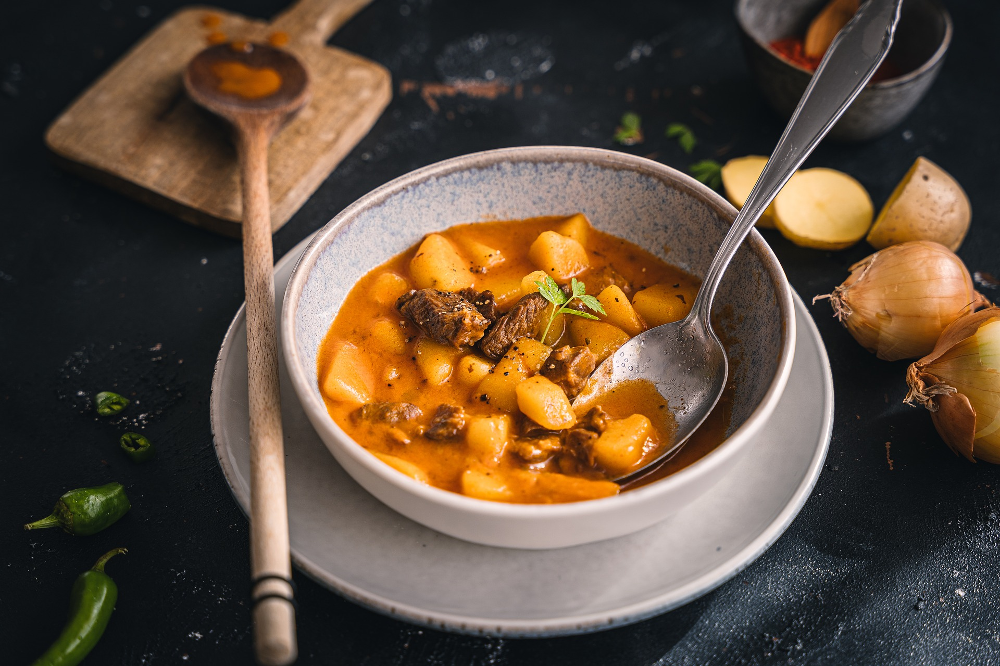

Goulash

It's what
This easy goulash recipe is quick to prepare, wonderfully satisfying, and made with simple pantry staples like canned tomatoes, pasta, and seasonings for a hearty, comforting meal perfect for busy weeknights. Let’s go over the basics:
Ingredients
- Onion and oil: Cook a large, chopped yellow onion in olive oil.
- Beef: Add two pounds of lean ground beef to the cooked onion. You can use ground turkey if you like.
- Tomato products: You’ll need two cans of diced tomatoes and two cans of tomato sauce.
- Sauces and seasonings: This easy goulash is flavored with fresh garlic, soy sauce, dried Italian herb seasoning, salt, and bay leaves.
- Macaroni: Cook two cups of elbow macaroni in the simmering meat sauce.
Steps
- Gather all ingredients.
- Heat olive oil in a large Dutch oven over medium-high heat. Add onion and cook 3 minutes, stirring often.
- Add ground beef and cook, breaking up the meat until it is evenly browned, about 5 minutes. Add garlic and cook 3 minutes, stirring often.
- Stir in water, tomato sauce, diced tomatoes, soy sauce, Italian seasoning, seasoned salt, and bay leaves. Bring to a simmer, cover and cook 5 minutes, stirring halfway through.
- Stir in uncooked macaroni, cover, and simmer over medium heat until pasta is tender, 11 to 13 minutes, stirring occasionally.
- Remove from heat, discard bay leaves, and serve.
Home